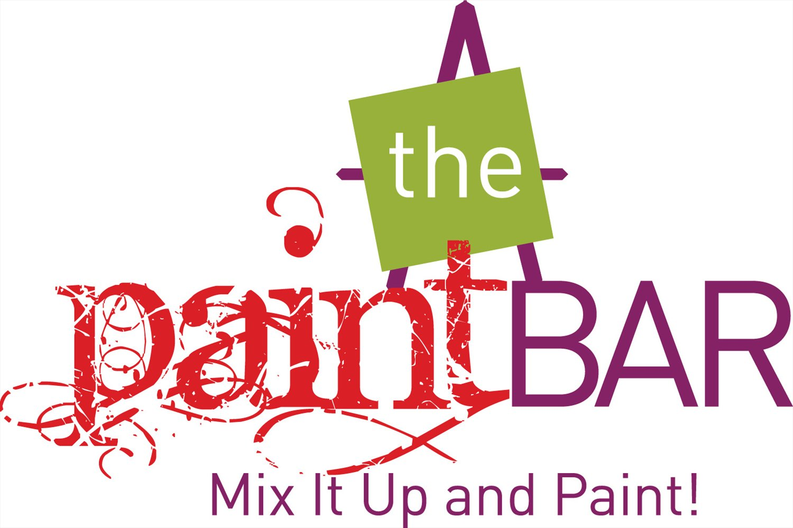

The Paint Bar is a sip and drink concept studio, where poeple from all ages come to learn how to paint. They were looking at getting a stronger online presence, specially on YouTube. So me and Luiza Barreto, worked together to create a series of new videos during the summer. Throughout the process we were able to find a new look for the channel and different video series ideas.
The process included pre-production, production, shooting, directiong, editing, post-editing, and other project managemnet skills. It was great experience to learn more about video production.